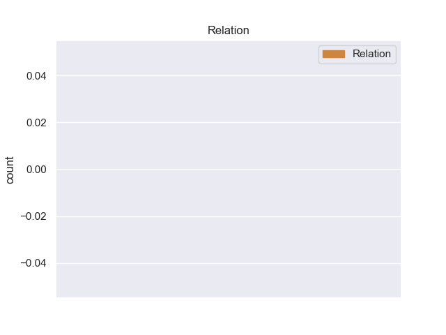
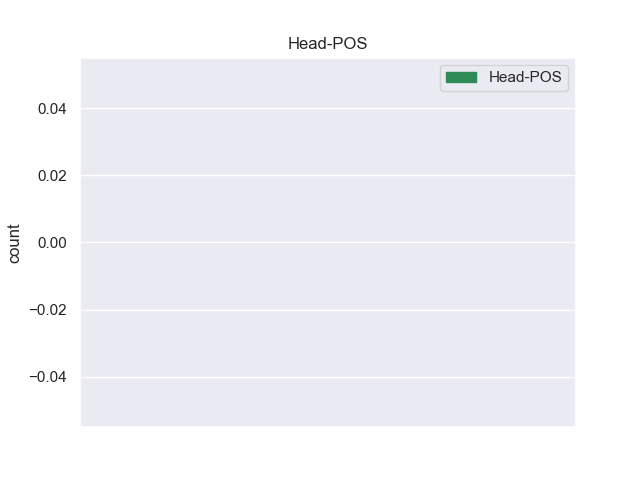
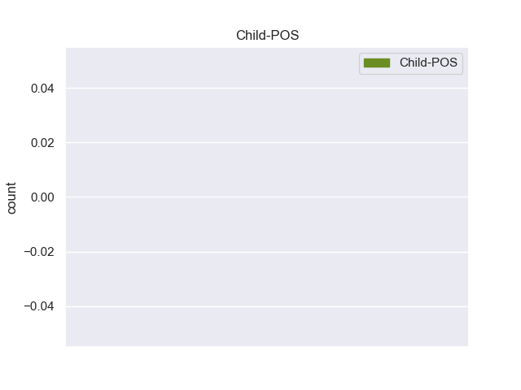

Distribution of features within this leaf



Agreement Rules sorted by frequency.
- When the dependent token is the auxiliary(aux) of the head token, and the head token is VERB and the dependent token is AUX.
1 Castelfiorentino _ _ _ _ 0 _ _ _
2 Il _ _ _ _ 0 _ _ _
3 Pd _ _ _ _ 0 _ _ _
4 replica _ _ _ _ 0 _ _ _
5 a _ _ _ _ 0 _ _ _
6 il _ _ _ _ 0 _ _ _
7 Pdl _ _ _ _ 0 _ _ _
8 su _ _ _ _ 0 _ _ _
9 il _ _ _ _ 0 _ _ _
10 governo _ _ _ _ 0 _ _ _
11 Monti _ _ _ _ 0 _ _ _
12 : _ _ _ _ 0 _ _ _
13 Chi _ _ _ _ 0 _ _ _
14 ha avere AUX VA Mood=Ind|Number=Sing|Person=3|Tense=Pres|VerbForm=Fin 15 aux _ _
15 sostenuto sostenere VERB V Gender=Masc|Number=Sing|Tense=Past|VerbForm=Part 0 _ _ _
16 un _ _ _ _ 0 _ _ _
17 governo _ _ _ _ 0 _ _ _
18 di _ _ _ _ 0 _ _ _
19 incapaci _ _ _ _ 0 _ _ _
20 non _ _ _ _ 0 _ _ _
21 può _ _ _ _ 0 _ _ _
22 ogg... _ _ _ _ 0 _ _ _
23 http://t.co/ZyX7TyiX _ _ _ _ 0 _ _ _
1 @user _ _ _ _ 0 _ _ _
2 e _ _ _ _ 0 _ _ _
3 oggi _ _ _ _ 0 _ _ _
4 e' essere AUX V Mood=Ind|Number=Sing|Person=3|Tense=Pres|VerbForm=Fin 7 cop _ _
5 anche _ _ _ _ 0 _ _ _
6 il _ _ _ _ 0 _ _ _
7 compleanno compleanno NOUN S Gender=Masc|Number=Sing 0 _ _ _
8 di _ _ _ _ 0 _ _ _
9 #Baudelaire _ _ _ _ 0 _ _ _
1 Se _ _ _ _ 0 _ _ _
2 mi _ _ _ _ 0 _ _ _
3 piace _ _ _ _ 0 _ _ _
4 il _ _ _ _ 0 _ _ _
5 calcio _ _ _ _ 0 _ _ _
6 come _ _ _ _ 0 _ _ _
7 a _ _ _ _ 0 _ _ _
8 tutti _ _ _ _ 0 _ _ _
9 gli _ _ _ _ 0 _ _ _
10 italiani _ _ _ _ 0 _ _ _
11 sono _ _ _ _ 0 _ _ _
12 uno _ _ _ _ 0 _ _ _
13 stupido _ _ _ _ 0 _ _ _
14 pecorone _ _ _ _ 0 _ _ _
15 . _ _ _ _ 0 _ _ _
16 Mentre _ _ _ _ 0 _ _ _
17 se _ _ _ _ 0 _ _ _
18 mi _ _ _ _ 0 _ _ _
19 piace _ _ _ _ 0 _ _ _
20 #Grillo _ _ _ _ 0 _ _ _
21 come _ _ _ _ 0 _ _ _
22 a _ _ _ _ 0 _ _ _
23 tutti _ _ _ _ 0 _ _ _
24 voi _ _ _ _ 0 _ _ _
25 sono essere AUX V Mood=Ind|Number=Sing|Person=1|Tense=Pres|VerbForm=Fin 26 cop _ _
26 figo figo ADJ A Gender=Masc|Number=Sing 0 _ _ _
27 . _ _ _ _ 0 _ _ _
28 Giusto _ _ _ _ 0 _ _ _
29 ? _ _ _ _ 0 _ _ _
1 @user _ _ _ _ 0 _ _ _
2 Ciao _ _ _ _ 0 _ _ _
3 , _ _ _ _ 0 _ _ _
4 è essere AUX VA Mood=Ind|Number=Sing|Person=3|Tense=Pres|VerbForm=Fin 5 aux:pass _ _
5 previsto prevedere VERB V Gender=Masc|Number=Sing|Tense=Past|VerbForm=Part 0 _ _ _
6 qualche _ _ _ _ 0 _ _ _
7 evento _ _ _ _ 0 _ _ _
8 o _ _ _ _ 0 _ _ _
9 qualche _ _ _ _ 0 _ _ _
10 sconto _ _ _ _ 0 _ _ _
11 particolare _ _ _ _ 0 _ _ _
12 per _ _ _ _ 0 _ _ _
13 la _ _ _ _ 0 _ _ _
14 giornata _ _ _ _ 0 _ _ _
15 mondiale _ _ _ _ 0 _ _ _
16 di _ _ _ _ 0 _ _ _
17 il _ _ _ _ 0 _ _ _
18 libro _ _ _ _ 0 _ _ _
19 di _ _ _ _ 0 _ _ _
20 domani _ _ _ _ 0 _ _ _
21 ? _ _ _ _ 0 _ _ _
22 Grazie _ _ _ _ 0 _ _ _
23 mille _ _ _ _ 0 _ _ _
24 ! _ _ _ _ 0 _ _ _
1 Ciarrapico _ _ _ _ 0 _ _ _
2 : _ _ _ _ 0 _ _ _
3 Comunque _ _ _ _ 0 _ _ _
4 sa _ _ _ _ 0 _ _ _
5 quale quale PRON PQ Number=Sing|PronType=Int 0 _ _ _
6 è essere AUX V Mood=Ind|Number=Sing|Person=3|Tense=Pres|VerbForm=Fin 5 cop _ _
7 il _ _ _ _ 0 _ _ _
8 problema _ _ _ _ 0 _ _ _
9 di _ _ _ _ 0 _ _ _
10 il _ _ _ _ 0 _ _ _
11 governo _ _ _ _ 0 _ _ _
12 Monti _ _ _ _ 0 _ _ _
13 ? _ _ _ _ 0 _ _ _
14 Quale _ _ _ _ 0 _ _ _
15 , _ _ _ _ 0 _ _ _
16 senatore _ _ _ _ 0 _ _ _
17 ? _ _ _ _ 0 _ _ _
18 Che _ _ _ _ 0 _ _ _
19 so' _ _ _ _ 0 _ _ _
20 troppo _ _ _ _ 0 _ _ _
21 brutti _ _ _ _ 0 _ _ _
22 #Ahahahahah _ _ _ _ 0 _ _ _
1 Basta _ _ _ _ 0 _ _ _
2 privilegi _ _ _ _ 0 _ _ _
3 , _ _ _ _ 0 _ _ _
4 basta _ _ _ _ 0 _ _ _
5 vitalizi _ _ _ _ 0 _ _ _
6 , _ _ _ _ 0 _ _ _
7 la _ _ _ _ 0 _ _ _
8 politica _ _ _ _ 0 _ _ _
9 deve dovere AUX VM Mood=Ind|Number=Sing|Person=3|Tense=Pres|VerbForm=Fin 12 aux _ _
10 essere _ _ _ _ 0 _ _ _
11 una _ _ _ _ 0 _ _ _
12 passione passione NOUN S Gender=Fem|Number=Sing 0 _ _ _
13 , _ _ _ _ 0 _ _ _
14 non _ _ _ _ 0 _ _ _
15 un _ _ _ _ 0 _ _ _
16 lavoro _ _ _ _ 0 _ _ _
17 strapagato _ _ _ _ 0 _ _ _
18 . _ _ _ _ 0 _ _ _
19 #crisi _ _ _ _ 0 _ _ _
20 #governo _ _ _ _ 0 _ _ _
21 #monti _ _ _ _ 0 _ _ _
1 ANCHE _ _ _ _ 0 _ _ _
2 IL _ _ _ _ 0 _ _ _
3 SOLE _ _ _ _ 0 _ _ _
4 STA' essere AUX V Mood=Ind|Number=Sing|Person=3|Tense=Pres|VerbForm=Fin 5 aux _ _
5 INCAZZATO incazzato ADJ A Gender=Masc|Number=Sing 0 _ _ _
6 CON _ _ _ _ 0 _ _ _
7 IL _ _ _ _ 0 _ _ _
8 GOVERNO _ _ _ _ 0 _ _ _
9 MONTI _ _ _ _ 0 _ _ _
10 ....! _ _ _ _ 0 _ _ _
11 http://t.co/NkZG9bHa _ _ _ _ 0 _ _ _
1 @user _ _ _ _ 0 _ _ _
2 l' _ _ _ _ 0 _ _ _
3 ho _ _ _ _ 0 _ _ _
4 letto _ _ _ _ 0 _ _ _
5 quell' _ _ _ _ 0 _ _ _
6 articolo _ _ _ _ 0 _ _ _
7 in _ _ _ _ 0 _ _ _
8 treno _ _ _ _ 0 _ _ _
9 su _ _ _ _ 0 _ _ _
10 il _ _ _ _ 0 _ _ _
11 CORRIERE _ _ _ _ 0 _ _ _
12 DELLA _ _ _ _ 0 _ _ _
13 SERA _ _ _ _ 0 _ _ _
14 ... _ _ _ _ 0 _ _ _
15 parole _ _ _ _ 0 _ _ _
16 durissime _ _ _ _ 0 _ _ _
17 .. _ _ _ _ 0 _ _ _
18 ed _ _ _ _ 0 _ _ _
19 e' _ _ _ _ 0 _ _ _
20 MARIO _ _ _ _ 0 _ _ _
21 MONTI _ _ _ _ 0 _ _ _
22 .. _ _ _ _ 0 _ _ _
23 un _ _ _ _ 0 _ _ _
24 moderato _ _ _ _ 0 _ _ _
25 .. _ _ _ _ 0 _ _ _
26 SIAM essere AUX V Mood=Ind|Number=Plur|Person=1|Tense=Pres|VerbForm=Fin 27 cop _ _
27 MESSI mettere VERB V Gender=Masc|Number=Plur|Tense=Past|VerbForm=Part 0 _ _ _
28 MALE _ _ _ _ 0 _ _ _
1 A _ _ _ _ 0 _ _ _
2 chi _ _ _ _ 0 _ _ _
3 afferma _ _ _ _ 0 _ _ _
4 : _ _ _ _ 0 _ _ _
5 si _ _ _ _ 0 _ _ _
6 , _ _ _ _ 0 _ _ _
7 ma _ _ _ _ 0 _ _ _
8 , _ _ _ _ 0 _ _ _
9 però _ _ _ _ 0 _ _ _
10 il _ _ _ _ 0 _ _ _
11 governo _ _ _ _ 0 _ _ _
12 Monti _ _ _ _ 0 _ _ _
13 ecc _ _ _ _ 0 _ _ _
14 ... _ _ _ _ 0 _ _ _
15 bisogna _ _ _ _ 0 _ _ _
16 chiedere _ _ _ _ 0 _ _ _
17 quale quale PRON PQ Gender=Fem|Number=Sing|PronType=Int 0 _ _ _
18 poteva potere AUX VM Mood=Ind|Number=Sing|Person=3|Tense=Imp|VerbForm=Fin 17 aux _ _
19 essere _ _ _ _ 0 _ _ _
20 la _ _ _ _ 0 _ _ _
21 soluzione _ _ _ _ 0 _ _ _
22 alternativa _ _ _ _ 0 _ _ _
23 ? _ _ _ _ 0 _ _ _
24 Le _ _ _ _ 0 _ _ _
25 elezioni _ _ _ _ 0 _ _ _
26 , _ _ _ _ 0 _ _ _
27 e _ _ _ _ 0 _ _ _
28 poi _ _ _ _ 0 _ _ _
29 ? _ _ _ _ 0 _ _ _
1 E _ _ _ _ 0 _ _ _
2 sarò _ _ _ _ 0 _ _ _
3 populista _ _ _ _ 0 _ _ _
4 o _ _ _ _ 0 _ _ _
5 quello quello PRON PD Gender=Masc|Number=Sing|PronType=Dem 0 _ _ _
6 che _ _ _ _ 0 _ _ _
7 è essere AUX V Mood=Ind|Number=Sing|Person=3|Tense=Pres|VerbForm=Fin 5 acl:relcl _ SpaceAfter=No
8 , _ _ _ _ 0 _ _ _
9 ma _ _ _ _ 0 _ _ _
10 trovo _ _ _ _ 0 _ _ _
11 che _ _ _ _ 0 _ _ _
12 l' _ _ _ _ 0 _ _ _
13 #antipolica _ _ _ _ 0 _ _ _
14 che _ _ _ _ 0 _ _ _
15 proclama _ _ _ _ 0 _ _ _
16 #Grillo _ _ _ _ 0 _ _ _
17 sia _ _ _ _ 0 _ _ _
18 in _ _ _ _ 0 _ _ _
19 molti _ _ _ _ 0 _ _ _
20 aspetti _ _ _ _ 0 _ _ _
21 più _ _ _ _ 0 _ _ _
22 politica _ _ _ _ 0 _ _ _
23 di _ _ _ _ 0 _ _ _
24 quanto _ _ _ _ 0 _ _ _
25 si _ _ _ _ 0 _ _ _
26 creda _ _ _ _ 0 _ _ _
27 . _ _ _ _ 0 _ _ _
1 @user _ _ _ _ 0 _ _ _
2 che _ _ _ _ 0 _ _ _
3 bella bello ADJ A Gender=Fem|Number=Sing 0 _ _ _
4 che _ _ _ _ 0 _ _ _
5 sei essere AUX V Mood=Ind|Number=Sing|Person=2|Tense=Pres|VerbForm=Fin 3 acl:relcl _ _
6 * _ _ _ _ 0 _ _ _
7 l' _ _ _ _ 0 _ _ _
8 abbraccia _ _ _ _ 0 _ _ _
9 * _ _ _ _ 0 _ _ _
1 @user _ _ _ _ 0 _ _ _
2 domenica _ _ _ _ 0 _ _ _
3 spaccate _ _ _ _ 0 _ _ _
4 .... _ _ _ _ 0 _ _ _
5 solo _ _ _ _ 0 _ _ _
6 uno _ _ _ _ 0 _ _ _
7 stadio _ _ _ _ 0 _ _ _
8 come _ _ _ _ 0 _ _ _
9 il _ _ _ _ 0 _ _ _
10 San _ _ _ _ 0 _ _ _
11 Paolo _ _ _ _ 0 _ _ _
12 può potere AUX VM Mood=Ind|Number=Sing|Person=3|Tense=Pres|VerbForm=Fin 0 _ _ _
13 e _ _ _ _ 0 _ _ _
14 deve dovere AUX VM Mood=Ind|Number=Sing|Person=3|Tense=Pres|VerbForm=Fin 12 conj _ _
15 fare _ _ _ _ 0 _ _ _
16 la _ _ _ _ 0 _ _ _
17 differenza _ _ _ _ 0 _ _ _
18 💛 _ _ _ _ 0 _ _ _
19 ❤ _ _ _ _ 0 _ _ _
20 💛 _ _ _ _ 0 _ _ _
21 ❤ _ _ _ _ 0 _ _ _
1 Ma _ _ _ _ 0 _ _ _
2 qualcuno _ _ _ _ 0 _ _ _
3 è _ _ _ _ 0 _ _ _
4 veramente _ _ _ _ 0 _ _ _
5 convinto _ _ _ _ 0 _ _ _
6 che _ _ _ _ 0 _ _ _
7 sta _ _ _ _ 0 _ _ _
8 società _ _ _ _ 0 _ _ _
9 di _ _ _ _ 0 _ _ _
10 dormienti _ _ _ _ 0 _ _ _
11 si _ _ _ _ 0 _ _ _
12 svegli _ _ _ _ 0 _ _ _
13 improvvisamente _ _ _ _ 0 _ _ _
14 e _ _ _ _ 0 _ _ _
15 si _ _ _ _ 0 _ _ _
16 accorga accorgere VERB V Mood=Sub|Number=Sing|Person=3|Tense=Pres|VerbForm=Fin 0 _ _ _
17 che _ _ _ _ 0 _ _ _
18 tutto _ _ _ _ 0 _ _ _
19 è essere AUX V Mood=Ind|Number=Sing|Person=3|Tense=Pres|VerbForm=Fin 16 ccomp _ _
20 ... _ _ _ _ 0 _ _ _
21 http://t.co/9TIjS7515e _ _ _ _ 0 _ _ _
1 " _ _ _ _ 0 _ _ _
2 Le _ _ _ _ 0 _ _ _
3 cose _ _ _ _ 0 _ _ _
4 si _ _ _ _ 0 _ _ _
5 possono _ _ _ _ 0 _ _ _
6 cambiare _ _ _ _ 0 _ _ _
7 se _ _ _ _ 0 _ _ _
8 partecipiamo _ _ _ _ 0 _ _ _
9 , _ _ _ _ 0 _ _ _
10 il _ _ _ _ 0 _ _ _
11 futuro _ _ _ _ 0 _ _ _
12 è essere AUX V Mood=Ind|Number=Sing|Person=3|Tense=Pres|VerbForm=Fin 13 cop _ _
13 nostro nostro DET AP Gender=Masc|Number=Sing|Poss=Yes|PronType=Prs 0 _ _ _
14 , _ _ _ _ 0 _ _ _
15 noi _ _ _ _ 0 _ _ _
16 siamo _ _ _ _ 0 _ _ _
17 l' _ _ _ _ 0 _ _ _
18 Italia _ _ _ _ 0 _ _ _
19 , _ _ _ _ 0 _ _ _
20 una _ _ _ _ 0 _ _ _
21 speranza _ _ _ _ 0 _ _ _
22 #Grillo _ _ _ _ 0 _ _ _
23 e _ _ _ _ 0 _ _ _
24 il _ _ _ _ 0 _ _ _
25 #M5S _ _ _ _ 0 _ _ _
26 sta _ _ _ _ 0 _ _ _
27 sera _ _ _ _ 0 _ _ _
28 SanDonato _ _ _ _ 0 _ _ _
1 @user _ _ _ _ 0 _ _ _
2 che _ _ _ _ 0 _ _ _
3 amore amore NOUN S Gender=Masc|Number=Sing 0 _ _ _
4 che _ _ _ _ 0 _ _ _
5 è essere AUX V Mood=Ind|Number=Sing|Person=3|Tense=Pres|VerbForm=Fin 3 acl:relcl _ _
6 !!!!!!!!! _ _ _ _ 0 _ _ _
Disagree Examples:
1 @user _ _ _ _ 0 _ _ _
2 Ma _ _ _ _ 0 _ _ _
3 siete essere AUX V Mood=Ind|Number=Plur|Person=2|Tense=Pres|VerbForm=Fin 7 cop _ _
4 anche _ _ _ _ 0 _ _ _
5 su _ _ _ _ 0 _ _ _
6 il _ _ _ _ 0 _ _ _
7 digitale digitale NOUN S Gender=Masc|Number=Sing 0 _ _ _
8 terrestre _ _ _ _ 0 _ _ _
9 ? _ _ _ _ 0 _ _ _
10 Scusate _ _ _ _ 0 _ _ _
11 l' _ _ _ _ 0 _ _ _
12 ignoranza _ _ _ _ 0 _ _ _
13 ^^ _ _ _ _ 0 _ _ _
1 Corsera _ _ _ _ 0 _ _ _
2 : _ _ _ _ 0 _ _ _
3 I _ _ _ _ 0 _ _ _
4 caroselli _ _ _ _ 0 _ _ _
5 e _ _ _ _ 0 _ _ _
6 i _ _ _ _ 0 _ _ _
7 fischi _ _ _ _ 0 _ _ _
8 in _ _ _ _ 0 _ _ _
9 piazza _ _ _ _ 0 _ _ _
10 hanno avere AUX VA Mood=Ind|Number=Plur|Person=3|Tense=Pres|VerbForm=Fin 11 aux _ _
11 guastato guastare VERB V Gender=Masc|Number=Sing|Tense=Past|VerbForm=Part 0 _ _ _
12 l' _ _ _ _ 0 _ _ _
13 umore _ _ _ _ 0 _ _ _
14 a _ _ _ _ 0 _ _ _
15 B. _ _ _ _ 0 _ _ _
16 e _ _ _ _ 0 _ _ _
17 a _ _ _ _ 0 _ _ _
18 i _ _ _ _ 0 _ _ _
19 suoi _ _ _ _ 0 _ _ _
20 che _ _ _ _ 0 _ _ _
21 induriscono _ _ _ _ 0 _ _ _
22 le _ _ _ _ 0 _ _ _
23 condizioni _ _ _ _ 0 _ _ _
24 per _ _ _ _ 0 _ _ _
25 dire _ _ _ _ 0 _ _ _
26 di _ _ _ _ 0 _ _ _
27 sì _ _ _ _ 0 _ _ _
28 a _ _ _ _ 0 _ _ _
29 il _ _ _ _ 0 _ _ _
30 governo _ _ _ _ 0 _ _ _
31 Monti _ _ _ _ 0 _ _ _
1 @user _ _ _ _ 0 _ _ _
2 UNICA _ _ _ _ 0 _ _ _
3 PROPOSTA _ _ _ _ 0 _ _ _
4 DI _ _ _ _ 0 _ _ _
5 CAMBIAMENTO _ _ _ _ 0 _ _ _
6 E' _ _ _ _ 0 _ _ _
7 “ _ _ _ _ 0 _ _ _
8 ITALIA _ _ _ _ 0 _ _ _
9 TERRA _ _ _ _ 0 _ _ _
10 LIBERA _ _ _ _ 0 _ _ _
11 “ _ _ _ _ 0 _ _ _
12 , _ _ _ _ 0 _ _ _
13 gli _ _ _ _ 0 _ _ _
14 altri _ _ _ _ 0 _ _ _
15 SONO essere AUX V Mood=Ind|Number=Plur|Person=3|Tense=Pres|VerbForm=Fin 17 cop _ _
16 IL _ _ _ _ 0 _ _ _
17 VECCHIO vecchio NOUN S Gender=Masc|Number=Sing 0 _ _ _
18 O _ _ _ _ 0 _ _ _
19 CLONI _ _ _ _ 0 _ _ _
20 . _ _ _ _ 0 _ _ _
1 #riotta _ _ _ _ 0 _ _ _
2 frettolosi _ _ _ _ 0 _ _ _
3 e _ _ _ _ 0 _ _ _
4 valenti _ _ _ _ 0 _ _ _
5 economisti _ _ _ _ 0 _ _ _
6 amici _ _ _ _ 0 _ _ _
7 , _ _ _ _ 0 _ _ _
8 che _ _ _ _ 0 _ _ _
9 si _ _ _ _ 0 _ _ _
10 sono essere AUX VA Mood=Ind|Number=Plur|Person=3|Tense=Pres|VerbForm=Fin 11 aux _ _
11 fidati fidare VERB V Mood=Imp|Number=Sing|Person=2|Tense=Pres|VerbForm=Fin 0 _ _ _
12 più _ _ _ _ 0 _ _ _
13 di _ _ _ _ 0 _ _ _
14 le _ _ _ _ 0 _ _ _
15 indiscrezioni _ _ _ _ 0 _ _ _
16 che _ _ _ _ 0 _ _ _
17 di _ _ _ _ 0 _ _ _
18 il _ _ _ _ 0 _ _ _
19 nostro _ _ _ _ 0 _ _ _
20 buonsenso _ _ _ _ 0 _ _ _
21 Mario _ _ _ _ 0 _ _ _
22 Monti _ _ _ _ 0 _ _ _
1 Controlla _ _ _ _ 0 _ _ _
2 questo _ _ _ _ 0 _ _ _
3 video _ _ _ _ 0 _ _ _
4 OTTO _ _ _ _ 0 _ _ _
5 E _ _ _ _ 0 _ _ _
6 MEZZO _ _ _ _ 0 _ _ _
7 , _ _ _ _ 0 _ _ _
8 IL _ _ _ _ 0 _ _ _
9 PUNTO _ _ _ _ 0 _ _ _
10 MARIO _ _ _ _ 0 _ _ _
11 MONTI _ _ _ _ 0 _ _ _
12 : _ _ _ _ 0 _ _ _
13 QUANTO _ _ _ _ 0 _ _ _
14 TEMPO _ _ _ _ 0 _ _ _
15 ABBIAMO avere AUX VA Mood=Ind|Number=Plur|Person=1|Tense=Pres|VerbForm=Fin 16 aux _ _
16 PERSO perdere VERB V Gender=Masc|Number=Sing|Tense=Past|VerbForm=Part 0 _ _ _
17 http://t.co/4GcaYlco _ _ _ _ 0 _ _ _
18 via _ _ _ _ 0 _ _ _
19 @user _ _ _ _ 0 _ _ _